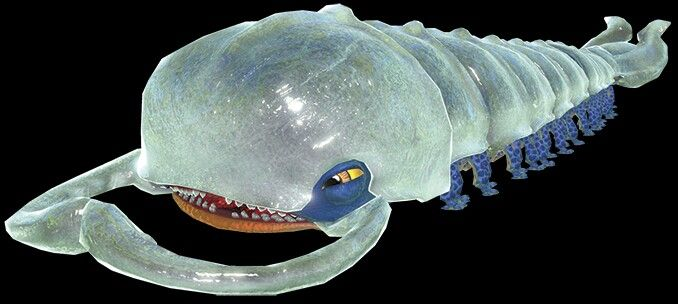

<!DOCTYPE HTML>
<html>
<head>
<meta charset="utf-8">
<title> Pikmin 3 Boss Information</title>
<style type="text/css">
  body {
			font-family:serif;
			background-color: #aee8fc;
		}

		table {
			background-color: #336e9c;
			border: ridge 10px #49916f;
		}

		tr, th {
			border: ridge 5px #58b058;
			padding: 5px;
		}

		tr:nth-child(even) {
			background-color: #BBEDD1;
		}

  h1 {
    font-size:50px;
    font-family: serif;
    color: #2d4f2d
  }
  h2{
    font-size:25px;
    font-family: serif;
    background-color: #e8ffeb
  }
  h3 {
    font-size:40px
    font-family: serif;
    color: #1d473c
  }
  th {
    background-color:#b8e6bd
  }
</style>
</head>
</html>

<body>
  <center>
    <table>
      <tbody>
        <tr>
        <caption><h1>Pikmin 3 Boss Information</h1></caption>


        <th colspan="1"><h3>Boss</h3></th>
        <th colspan="1"><h3>Scientific Name & Animal Family</h3></th>
        <th colspan="1"><h3>Habitat</h3></th>
        <th colspan="1"><h3>Description</h3></th>
        <th colspan="1"><h3>Behavior</h3></th>
        <th colspan="1"><h3>How to Defeat</h3></th>
      </tr>
  <tr>
  <th rowspan="2"><h2>Armored Mawdad</h2></th></tr>
    <th rowspan="1">Tuberclipeum rex (Mawdad Family)
  <th rowspan="1">The Armored Mawdad lives in a hollowed treetrunk in the Garden of Hope.</th>
  <th rowspan="1">The Mawdad is a large, centipede-like creature with many tiny legs paired with Crytal-like mandibles. The armor of the Mawdad is actually its exoskeleton and it too is make of a tough crytal-like material.</th>
  <th rowspan="1"> This creature will charge at your pikmin in an attempt to encircle them in its mandibles in order to eat them. It will also crawl around the inside walls of the hollowed out tree trunk in order to escape your attacks and prepare for its next attack.</th>
  <th rowspan="1">In order to defeat this creature, you will need Rock Pikmin and Red Pikmin. Since this is a boss located at the beginning of the game, that is the only pikmin you will be able to use for this fight. Use your Rock Pikmin to shatter its crytal armor and then use your red pikmin to latch onto it's soft body to attack. If your pikmin manage to get caught in its mandibles, hit the head of the creature to distract it from devouring your pikmin!</th></tr>


  <tr>
    <th rowspan="2"><h2>Vehemoth Phosbat</h2></th></tr>
    <th rowspan="1">Tectupervus pteromys (Aerodentia Family)</th>
    <th rowspan="1">The Vehemoth Phosbat can be located in the cold, dark caves of the Distant Tundra.</th>
    <th rowspan="1">The Vehemoth Phosbat is a moth-like salamander creature that has dark hairs on its head and back as well as longer, glowing purple hairs that produce a toxic dust.</th>
    <th rowspan="1">This creature will make itself invisible by turning off its bioluminescence to remain hidden. Upon finding the chance, it will light up and inhale to trap pikmin and crew members. When in distress, it will flap its wings and release a toxic cloud of purple dust that will choke your pikmin and causes them to scatter.There are also smaller, perhaps baby versions, called Phosbats that spawn from large eggsack-like pods that you have to avoid by standing under any light source such as glowing mushrooms or lightbulbs. After powering two light sources, the Vehemoth Phosbat will call upon its offspring to attack as well.</th>
    <th rowspan="1">To reveal the Vehemoth Phosbat, you'll need to use your eletric yellow pikmin to power the various light sources found throughout the cave to expose it. Once this is done, the creature will be stunned and fall to the ground which gives you a chance to attack it and the other Phosbats. It is also crucial to destroy the Phosbat pods in order to prevent more from spawning. Doing so will give you some nectar that you can use to make your pikmin stronger to aid in fights!</th>
    </tr>

    <tr>
      <th rowspan="2"><h2>Sandbelching Meerslug</h2></th></tr>
      <th rowspan="1">Gastropoidae Anguilii (Meerslug Family)</th>
      <th rowspan="1">The Sandbelching can be found in a giant sand mound in the Tropical Wilds, hiding under neath the sand until it decides to attack.</th>
      <th rowspan="1">The Sandbelching Meerslug is a brownish-green amphibian, lamprey like creature with thick purple lips, two rows of sharp teeth, very small white eyes with spike like protrusions on its back with a tiny tail.</th>
      <th rowspan="1">Upon approaching a cell phone within the game, the Meerslug will start its battle by swallowing it whole and tunneling beneath the surface and then sucking in sand to create a vortex in the sand to suck up as much pikmin as possible to eat. It can also use the sand it sucks up to spit it back out in forms of sand balls which can cause your pikmin to be stuck in the ground and replant them. They can still be eaten if they are planted and you'll have to unplant them to save them!</th>
      <th rowspan="1">When the meerslug emerges from the sand, approach the creature from the back of its head with your red Pikmin and make use of your whistle to get them out of the way when your chance for attacking is gone. With enough exhaustion, it will flail onto the top of the sand and that's when you'll be able to use all of your pikmin to do some real damage! However, be careful with timing and really use that whistle to pull your pikmin away quickly when it retreats. When the creature gets to halfway health, it will create a sand vortex the size of the whole battle field and its best to retreat to the rock at the entrance and it will also spit rapid fire sand balls. Wait until it finishes this phase and continue to attack when it exposes itself on the top of the surface until you defeat it!</th>
      </tr>

      <tr>
        <th rowspan="2"><h2>Scornet Maestro</h2></th></tr>
        <th rowspan="1">Spourgitis Advenus (Huntinpeck Family)</th>
        <th rowspan="1">The Scornet Maestro can be found on top of a tree trunk in the Twilight River.</th>
        <th rowspan="1">The Scornet Maestro is a avian insectoid creature that is sort of like a queen bee and commands a swarm of 100 Scornets using its harp-like beak.</th>
        <th rowspan="1">When the Scornet starts its attack, It will fly around and use its Scornets in coordianted attacks with different patterns and it makes using your walking pikmin useless until a later attacking phase. The Scornets will leave after the formations. If all of the Maestro's Scornets are killed, it will summon more from the trees to aid its attacks.</th>
        <th rowspan="1">It's best to use winged Pikmin when for the Scornets. If your pikmin are captured by the scornets, it's best to free your pikmin before theyre eated and killed. However, the Scornets are very vulnerable to Rock Pikmin and are useful for picking them off. Once there are enough pikmin on the Maestro, It will weigh it down and give you more of a chance to attack it will all your pikmin and make use of your Ultra-Spicy Spray to give your pikmin a little extra power to do even more damage.</th>
        </tr>

        <tr>
          <th rowspan="2"><h2>Quaggled Mireclops</h2></th></tr>
          <th rowspan="1">Trestripods Gighenum (Mireclops Family)</th>
          <th rowspan="1">The Quaggled Mireclops can be located in a giant mud puddle in the Garden of Hope.</th>
          <th rowspan="1">The Quaggled Mireclops is creature that mimics plants and a mass of land with its head mimicking a strawberry, initially encased in crystal. The body is a grassy, dirt maass with three legs with 3 paw like pads at the ends of the legs.</th>
          <th rowspan="1">The behavior of this creature is that it will begin stomping around following you and your pikmin creating water puddles and even giant water puddles as you battle. Whenever the paws of the Mireclops gets agitated enough, it will collapse onto the ground and will lick up any Pikmin that get too close to its strawberry-like head with a lid-like mouth and a colorful slug-like tongue.</th>
          <th rowspan="1">When the Quaggled Mireclops begins its fight, It's best to immediately try to attack the sensitive paws of the Mireclops and to focus on getting one of them agitated enough that it will collapse. When you get a chance, break the rest of the crystal on its head and attack the head as much as you can before pulling away quickly before it has a chance to lick up your pikmin. Ocassionally, it will rampage and its best to retreat to the entrance until it calms down enough for you to continue the attack.</th>
          </tr>

          <tr>
            <th rowspan="2"><h2>Plasm Wraith</h2></th></tr>
            <th rowspan="1">Unknown (Unknown Family)</th>
            <th rowspan="1">The Plasm Wraith can be found in the Formiddable Oak which is a foreboding tree in the top of the regions.</th>
            <th rowspan="1">The Plasm Wraith is a featurelss mass of protoplasmic material that is shaped human-like with a metallic golden sheen.</th>
            <th rowspan="1">This creature is able to split itself into different pieces that can become semi-dependant. As the first phase initiates, It will drip down from the cave ceiling and will chase the players throughout the chasms and you will have to solve various obstacles to stay ahead of it and to keep Olimar safe. If it manages to capture Olimar, it will leave the player alone and go the other way and you'll have to chase it down. A good thing to keep in mind is that it cannot enter water. The second phase of this creature means that it, unfortunately, it does capture Olimar. With the attacks, it will reabsorb its lost mass. As your pikmin get rid more & more of its mass, it will put out a fractal-emroidered cube, which will allow it to create an elemental plasmic form that will be able to switch different elements as a last means of self-defense. At a quarter of health, It will create 3 elementals at once, and if they're left alive for more than 20 seconds, it will reabsorb them. At the very last of the battle, It will be significantly smaller, but faster, but also more vulnerable. Once defeated it will retreat into the cave.</th>
            <th rowspan="1">Rock Type Pikmin are the best type of Pikmin to use during this fight since theyre so hardy, they can't be attacked by the Plasm Wraith's needle arms. However, when the elemental phases initiate, its best to switch between different types of pikmin that suit the elemental to defeat them. You also have to break the elemental cubes so that they stop producing more. A simple attack would be attack its belly and get rid of the plasma mass as it falls onto the ground.</th>
            </tr>

            <tr>
              <th rowspan="2"><h2>Shaggy Long Legs</h2></th></tr>
              <th rowspan="1">Pseudoarachnia Capilium (Arachnorb Family)</th>
              <th rowspan="1">This mini boss can be found within the Tropical Wild and the Distant Tundra.</th>
              <th rowspan="1">The Shaggy Long Legs has masses of puffballs along it's joints and a long drapey mass of hair covering its head. It's appearence changes depending on its environment. The black and white variants appear in the Distant Tundra and the black variant in the Tropical Wilds. However, there is some debate if the Baldy Long Legs is a different creature entirely because the coloration of the joints and its hairless appearence, however they have a similar appearence to Shaggy Long Legs after they've lost hair.</th>
              <th rowspan="1">This creature will try to stomp on your pikmin with its four legs in order to kill them, it does not actually eat them which is interesting, however, that won't stop it from attacking. It will also shake off any pikmin that manage to climb onto its legs and body in an attempt to free itself from them and stomp on them.</th>
              <th rowspan="1">In order to defeat the Shaggy Long Legs, your pikmin will have to pluck out all the hairs on the joints and then be able to move on to the creature's main body and remove the hair in order to attack it until its defeated.</th>
              </tr>

              <tr>
                <th rowspan="2"><h2>Burrowing Snagret</h2></th></tr>
                <th rowspan="1">Shiropedes Anacondii (Snavian Family)</th>
                <th rowspan="1">The Burrowing Snagret appears in the Twilight River.</th>
                <th rowspan="1">The Burrowing Snagret has a long blue scaly body that lead up to a puff of white feathers with a small head and a long yellow beak. The rest of its body is hidden under ground.</th>
                <th rowspan="1">This creature will only surface when approached by pikmin or a captain from your team. When above ground it will try to scoop up Pikmin in its mouth  by attacking five times. If it misses, it will get stuck in the ground which leaves it vulnerable to attacks. </th>
                <th rowspan="1">To defeat the Snagret, try to get the Snagret to miss and this will cause it to get stuck in the ground. It's best to use winged pikmin and ultra spicy spray to avoid your ground pikmin getting eaten while still being able to do some damage.</th>
                </tr>
